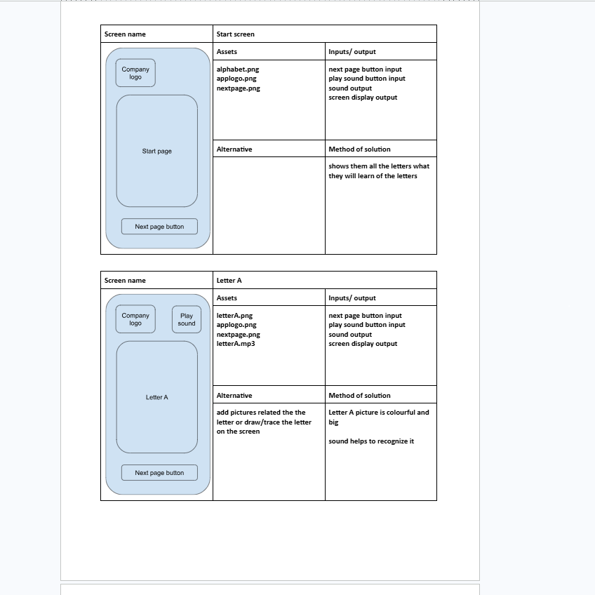
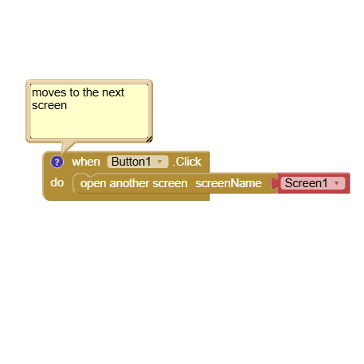
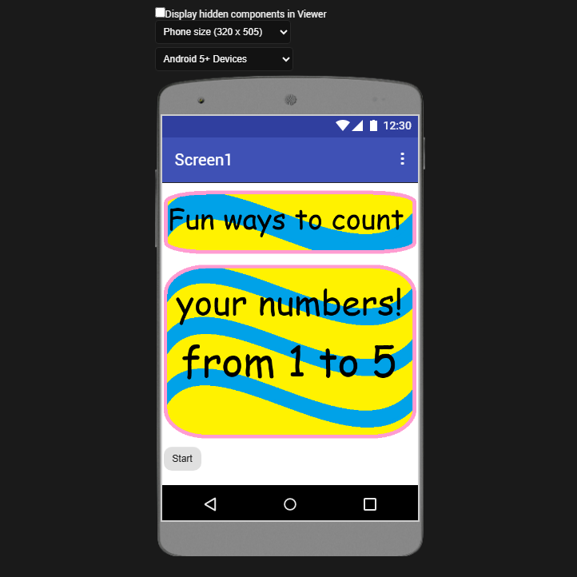

Home Page
unit 1
unit 2
unit 8
unit 13
unit 13 information
unit 14
unit 14 information

How many people do you know who have smartphones or mobile tablet devices? This means that they are carrying considerable computer power around with them. There has been an explosion of software applications, known as apps, to use on these devices. You can use apps for many different purposes; for example, a location app helps you to find your nearest shop, and a leisure app makes it easy to download your favourite music.
Software developers and engineers have scrambled to meet the demand for mobile apps, that are increasingly being used by businesses and organisations. The market for Apple, Android and other apps have boomed. Software engineers are involved with the design, development, testing and maintenance of apps. In addition, software businesses that develop apps employ other professionals, including creative designers, artists and sound engineers. In this unit you will investigate the characteristics and uses of mobile apps, and learn how mobile apps are developed. Then you will design, develop, test and review your own mobile app. Rather than producing large amounts of original code from scratch, the emphasis in this unit is on you integrating predefined programs/code snippets (specific instructions for a mobile computer) with ready-made and original assets (e.g. buttons and sounds) by using some original code. This will save you significant amounts of time when developing your mobile app. You will review your finished app, having obtained feedback from others, and evaluate possible improvements.
